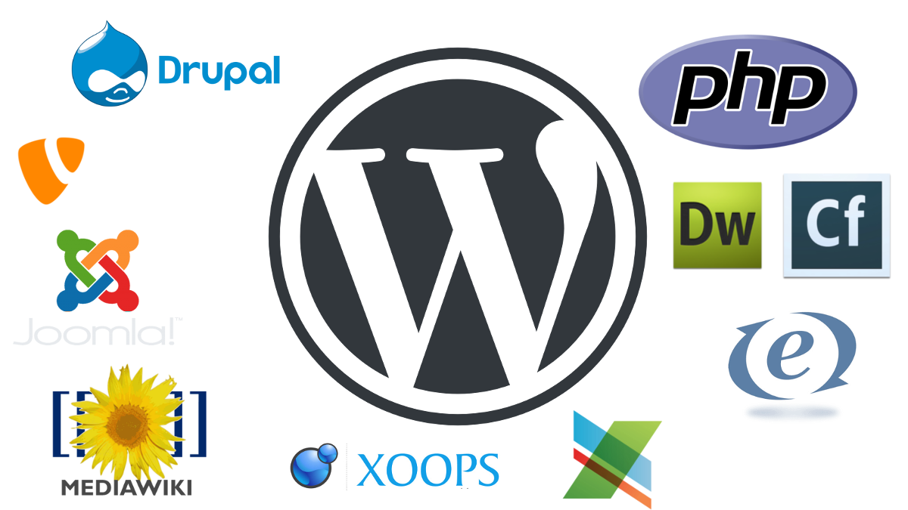

Putting all your eggs in one basket
Peter Edwards
Application Developer, University of Leeds
“It is the part of a wise man to keep himself to-day for to-morrow, and not to venture all his eggs in one basket”
Don Quixote (Part I, Book III, Chapter 9) by Cervantes (P. Motteux, Ed.).

The demise of the UNIX hosting service
- In December 2016, one of the sites in the University's UNIX hosting service was hacked
- The site was used to spread malicious code to the other 200+ sites in the service
- When the sites were examined to determine the cause, a large number were found to be vulnerable
The University of Leeds WordPress hosting service
- Set up as a 6 month pilot in August 2016 with WP Engine acting as a hosting provider.
- The purpose of the service was to provide hosting for research projects, conferences and research groups in a managed environment
- The service rapidly expanded to include the 90 WordPress sites which were compromised in UNIX hosting
Migrating sites to WordPress
- Using the WP Engine automated migration tool
- Using WordPress XML import/export tools
- Using the source system to generate a WordPress export file
- Import content from CSV files or other structured data source using custom scripts
- Copy and paste
WordPress multisite
in WordPress core since 2010, version 3.0
- Multiple sites in a single installation
- Control over Theme and Plugin availability
- Low administrative overhead
Domain mapping
in WordPress core since 2016, version 4.5
- Assign domain names to each site on a network
- Results in sites which appear to be independent to the end user, but are centrally managed
Caching and optimisation
Enabled through plugins and server configuration
- Plugins will save WordPress output to files - using WordPress like a static site generator
- Servers are configured to check the file based cache rather than generate content dynamically for each request
Disadvantages...
- Proliferation of independent sites (600+ with 50+ added per year)
- Sites are uniform and percieved by users as being "boring"
- Requires governance, monitoring and an archiving strategy
Advantages...
- Ability to create sites in a standard supported format quickly with no coding required
- Sites share a common design, so enhancements such as Accessibility features can be added to all sites simultaneously
- Ability to implement governance, monitoring and archiving strategies